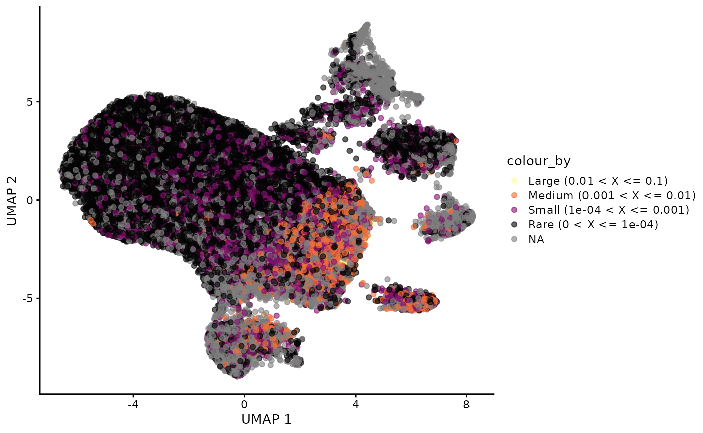
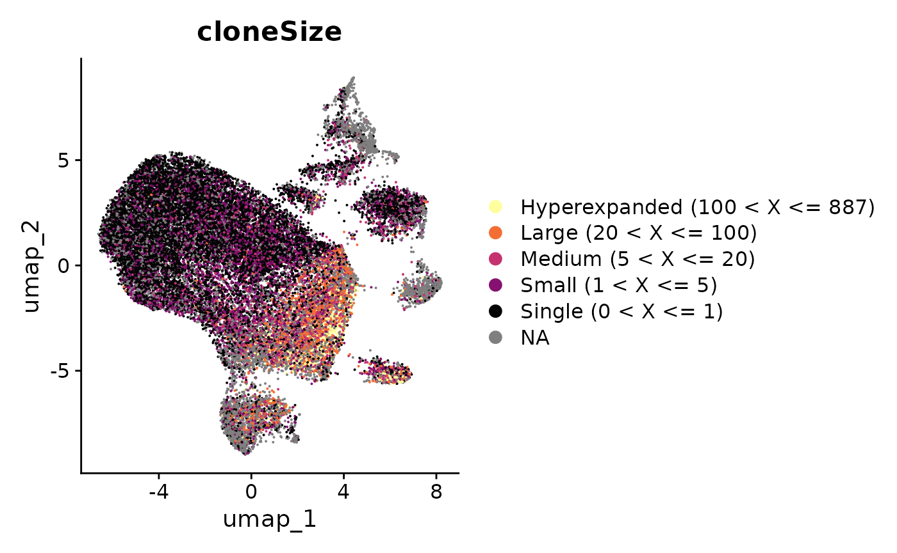

Attaching_SC.RmdThe data in the scRepertoire package is derived from a study of acute
respiratory stress disorder in the context of bacterial and COVID-19
infections. The internal single cell data (scRep_example())
built in to scRepertoire is randomly sampled 500 cells from the fully
integrated Seurat object to minimize the package size. However, for the
purpose of the vignette we will use the full single-cell object with
30,000 cells. We will use both Seurat and Single-Cell Experiment (SCE)
with scater to perform further visualizations in tandem.
scRep_example <- readRDS("scRep_example_full.rds")
#Making a Single-Cell Experiment object
sce <- Seurat::as.SingleCellExperiment(scRep_example)After processing the contig data into clones via
combineBCR() or combineTCR(), we can add the
clonal information to the single-cell object using
combineExpression().
Importantly, the major requirement for the attachment is matching contig cell barcodes and barcodes in the row names of the meta data of the Seurat or Single-Cell Experiment object. If these do not match, the attachment will fail. Based on ease, we suggest making changes to the single-cell object barcodes.
Part of combineExpression() is calculating the clonal
frequency and proportion, placing each clone into groups called
cloneSize. The default cloneSize
argument uses the following bins: c(Rare = 1e-4, Small = 0.001, Medium =
0.01, Large = 0.1, Hyperexpanded = 1), which can be modified to include
more/less bins or different names.
Clonal frequency and proportion is dependent on the repertoires being
compared, which we can modify the calculation using the
group.by parameter, such as grouping by the
Patient variable from above. If group.by is
not set, combineExpression() will calculate clonal
frequency, proportion, and cloneSize as a function of
individual sequencing runs. In addition, cloneSize can
use the frequency of clones when proportion =
FALSE.
We can look at the default cloneSize groupings using the Single-Cell
Experiment object we just created above with using
group.by set to the sample variable used in
combineTCR() :
sce <- combineExpression(combined.TCR,
sce,
cloneCall="gene",
group.by = "sample",
proportion = TRUE)
#Define color palette
colorblind_vector <- hcl.colors(n=7, palette = "inferno", fixup = TRUE)
plotUMAP(sce, colour_by = "cloneSize") +
scale_color_manual(values=rev(colorblind_vector[c(1,3,5,7)]))
Alternatively, if we want cloneSize to be based on
the frequency of the clone, we can set proportion =
FALSE and we will need to change the cloneSize bins to
integers. If we have not inspected our clone data, setting the upper
limit of the clonal frequency might be difficult -
combineExpression() will automatically adjust the upper
limit to fit the distribution of the frequencies. To demonstrate this,
check out the Seurat object below:
scRep_example <- combineExpression(combined.TCR,
scRep_example,
cloneCall="gene",
group.by = "sample",
proportion = FALSE,
cloneSize=c(Single=1, Small=5, Medium=20, Large=100, Hyperexpanded=500))
Seurat::DimPlot(scRep_example, group.by = "cloneSize") +
scale_color_manual(values=rev(colorblind_vector[c(1,3,4,5,7)]))
If we have TCR/BCR enrichment or want to add info for gamma-delta and
alpha-beta T cells, we can make a single list and use
combineExpression().
Major note if there are duplicate barcodes (if a
cell has both Ig and TCR), the immune receptor information will not be
added. It might be worth checking cluster identities and removing
incongruent barcodes in the products of combineTCR() and
combineBCR().
As an anecdote, the testing data we used to improve this function had 5-6% of barcode overlap.
#This is an example of the process, which will not be evaluated during knit
TCR <- combineTCR(...)
BCR <- combineBCR(...)
list.receptors <- c(TCR, BCR)
seurat <- combineExpression(list.receptors,
seurat,
cloneCall="gene",
proportion = TRUE)